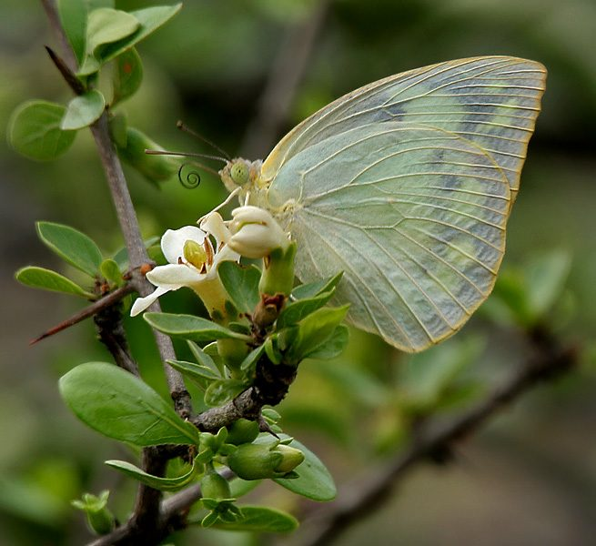

पीली तितलीCommon Emigrant
Catopsilia pomona · Pieridae · INS-0020

- Scientific name
- Catopsilia pomona (Fabricius, 1775)
- Family
- Pieridae
- Hindi
- पीली तितली
- Status here
- native
- IUCN
- not evaluated
When to look कब देखें
Present all year.
पीली तितली / Common Emigrant
Catopsilia pomona (Fabricius, 1775) — Pieridae
पीली तितली (कॉमन एमिग्रेंट) — पूर्वी उत्तर प्रदेश के बगीचों, खेतों और झाड़ियों में पाई जाने वाली एक बहुत ही आम, मध्यम आकार की निवासी तितली है। इसे "लेमन एमिग्रेंट" भी कहते हैं। इसका रंग हल्के नींबू-पीले (lemon-yellow) से लेकर गहरे पीले रंग तक होता है, जिसके पंखों के किनारों पर काले धब्बे या बारीक लकीरें होती हैं। यह तितली बहुत तेज़ और सीधी उड़ान (rapid flight) भरती है। यह प्रजाति बड़े पैमाने पर मौसमी प्रवास (seasonal migration) के लिए जानी जाती है, जहाँ मॉनसून के बाद यह लाखों के झुंड में यात्रा करती है। इसके कैटरपिलर मुख्य रूप से अमलतास [FLR-0038 Amaltas] के पत्तों को खाते हैं, जो इसका मुख्य मेज़बान पौधा (host plant) है।
Quick Identification त्वरित पहचान
| Feature | Description |
|---|---|
| Size | Medium-sized butterfly; wingspan 55–80 mm |
| Colouration | Bright lemon-yellow (pomona form) or pale greenish-white (crocale form) |
| Upperwings | Male has narrow black borders on the apex of forewings; female has broader borders |
| Underwings | Yellowish-white with pinkish or red spots at the center of the wings (ocelli) |
| Antennae | Reddish-pink or dark brown with curved tips |
Field tip: Look around flowering shrubs or mud puddles. Easily spotted by its constant fast flying close to the ground, and its uniform bright yellow or greenish-white wings. When resting, it closes its wings, showing the cryptically colored underwings.
Morphology आकारिकी
Biometrics (typical measurements for adult specimens in the Gangetic plains):
| Measurement | Range |
|---|---|
| Forewing length | 26–36 mm |
| Wingspan | 55–80 mm |
Wing details: The species shows high polymorphism (multiple color forms). The two main forms are:
- Form crocale: Upperwings are pale greenish-white with broad black borders on the forewing apex; underwings are clear, lacking any pink spots. Antennae are black.
- Form pomona: Upperwings are bright sulfur-yellow or lemon-yellow; underwings are marked with pinkish-red ringed spots (ocelli) at the center of both wings. Antennae are pinkish-red.
Behaviour & Ecology व्यवहार और पारिस्थितिकी
Fast flyer and mud-puddler.
- Rapid flight: Fly fast and straight, typically keeping 1–2 meters above the ground, making them difficult for predators to catch in open spaces.
- Mud-puddling: During dry sunny days, young males gather in large groups of dozens on damp sand or mud near pond edges to suck mineral-rich water, which is essential for reproduction.
- Aggressive migration: Undertake long-distance movements in large swarms containing millions of individuals, traveling along river valleys in response to monsoon wind changes and host plant availability.
Ecological Role पारिस्थितिक भूमिका
Key pollinator and leaf consumer.
- Pollination: Visit a wide variety of flowers, serving as an important pollinator for wild herbs, agricultural crops, and forest trees in the Basti plains.
- Food chain base: Larvae and adults serve as food for spiders, mantises, robber flies, and insectivorous birds (such as [BRD-0032 Asian Green Bee-eater]).
Life Cycle / Phenology जीवन चक्र
- Breeding: Breeds throughout the year, with peak activity during the monsoon (July–September).
- Egg laying: The female lays small, white, spindle-shaped eggs singly on the young leaves and flower buds of the host plant. Eggs turn yellowish before hatching (2–3 days).
- Larval stage: The caterpillar feeds actively on the host leaves, growing through 5 instars in 10–12 days.
- Pupation: Pupates on the underside of a leaf or stem, forming a smooth, green, boat-shaped chrysalis suspended by a silken girdle.
- Adult emergence: The adult butterfly emerges in 6–8 days. The entire lifecycle from egg to adult is completed in 18–23 days.
Larval (Caterpillar) Stage
- Caterpillar appearance: The mature caterpillar is about 35–40 mm long, cylindrical, and leaf-green. It has a rough skin covered in tiny black dots, and a distinct pale yellow or white longitudinal stripe running along the side of the body, lined with blue.
- Host plant: Feeds exclusively on the leaves of the genus Cassia, primarily the native Amaltas [FLR-0038 Amaltas] (Cassia fistula) and the shrub Senna tora [FLR-0018 Chakramard].
- Pupation site: Attaches to the underside of leaf stalks or twigs using a strong silken pad and girdle. The pupa mimics a green leaf to avoid predators.
Host Plants or Prey आहार
Larval host plants:
- Trees: Amaltas [FLR-0038 Amaltas] (Cassia fistula) — primary host.
- Herbs/Shrubs: Chakramard [FLR-0018 Chakramard] (Senna tora) and Senna obtusifolia.
Adult food:
- Nectar from flowers including Lantana [FLR-0007 Lantana Camara], Wild Jasmine, and various agricultural weeds.
Predators / Natural Enemies शत्रु
- Birds: Drongos (like [BRD-0005 Black Drongo]) and Bee-eaters (like [BRD-0032 Asian Green Bee-eater]) capture adults in flight.
- Insects: Praying mantises [INS-0006 Praying Mantis] and robber flies ambush adults on flowers.
- Spiders: Giant wood spiders [SPD-0002 Giant Wood Spider] catch them in vertical webs.
- Parasitoids: Tiny wasps (Apanteles spp.) lay eggs inside the caterpillars, killing them before pupation.
Agricultural / Human Relevance कृषि प्रासंगिकता
Ornamental pollinator and minor defoliator.
- Pollination support: Highly beneficial for local home gardens and agricultural fields in Basti, improving seed set in wild and cultivated plants.
- Tree defoliation: During peak monsoon hatches, hundreds of caterpillars can defoliate young Amaltas [FLR-0038 Amaltas] trees. However, healthy trees recover quickly, and this does not cause long-term damage, serving as a natural pruning process.
Expected Locally स्थानीय रूप से अपेक्षित
Not a field record. Written from published accounts for eastern Uttar Pradesh. No confirmed local sighting yet — if you have seen it, that is what the atlas needs.
अभी तक स्थानीय पुष्टि नहीं। यह विवरण प्रकाशित स्रोतों से है, किसी अवलोकन से नहीं।
Commonly observed in Basti district's rural schools, temple gardens, and roadsides where Amaltas trees are planted. During August and September, large groups of these yellow butterflies can be seen mud-puddling on wet soil near village hand-pumps.
Distribution वितरण
Global range: Widespread across the Indo-Australian region, from India and Sri Lanka through Southeast Asia to Australia and the Pacific Islands.
In India: Found throughout the country, from the plains up to 2,000 meters in the Himalayas.
In Uttar Pradesh: Abundant resident across all districts, showing seasonal population explosions.
In Basti district / eastern UP: Found in all blocks, particularly in school gardens, roadside plantations, and scrub edges.
Research Questions शोध प्रश्न
Anyone can investigate these | कोई भी इन प्रश्नों की जाँच कर सकता है
- What is the ratio of form crocale to form pomona in Basti butterfly populations during the dry winter vs. wet monsoon? — Survey local populations and record form ratios.
- How do emigrant caterpillars adapt their feeding position on Amaltas leaves to avoid detection by insectivorous birds? — Map caterpillar positions during day vs. night.
- What is the preference of adult butterflies for feeding on native flowers compared to invasive Lantana? — Record flower visitation frequencies.
- Does the chemical composition of Amaltas leaves protect the caterpillars from common predatory wasps? / क्या अमलतास के पत्तों के रासायनिक तत्व कैटरपिलर को शिकारी ततैयों से बचाते हैं? — Observe wasp attacks on feeding larvae.
- How do migrating swarms of this species adjust their flight direction in response to local wind directions along the Ghaghra river? / इस प्रजाति के प्रवासी झुंड घाघरा नदी के किनारे हवा की दिशा के अनुसार अपनी उड़ान की दिशा को कैसे बदलते हैं? — Track wind direction and swarm movements.
Similar Species मिलती-जुलती प्रजातियाँ
| Species | Key Difference | हिंदी |
|---|---|---|
| Catopsilia pyranthe (Mottled Emigrant) | Slightly smaller; underwings have a mottled texture resembling chalky green lines; narrower black borders | चित्तीदार पीली तितली — खड़िया जैसी लकीरें |
| Terias hecabe (Common Grass Yellow) | Much smaller (wingspan ~35 mm); slow, fluttering flight close to grass; outer margins of wings have broad, irregular black borders | पीला घास का कीड़ा — बहुत छोटा, धीमी उड़ान |
| Ixias pyrene (Yellow Orange Tip) | Upperwings have a prominent, bright orange patch on the forewing apex; slower flight | नारंगी-टिप तितली — पंखों पर चमकीला नारंगी धब्बा |
Field rule: Medium size, rapid straight flight, uniform lemon-yellow or greenish-white wings, and presence of pink spots (in pomona form) or clear wings (in crocale form) on underwings identify the Common Emigrant.
Taxonomy & Classification वर्गीकरण
Original description. Johan Christian Fabricius described the Common Emigrant as Papilio pomona in 1775 in his work Systema Entomologiae (p. 479). The type locality was New Holland (Australia). The genus name Catopsilia combines the Greek kato (below) and psilos (bare/smooth), referring to the smooth scales on the underside. The specific name pomona honors Pomona, the Roman goddess of fruit trees, referring to the yellow, fruit-like color of the butterfly.
Subspecies. Monotypic — the various color forms are seasonal morphs rather than distinct subspecies.
Family and order placement. Placed in the order Lepidoptera, family Pieridae (whites and yellows).
Phylogenetic notes. Catopsilia pomona is closely related to Catopsilia crocale, which was historically considered a separate species but is now established as a seasonal dimorphic form of C. pomona.
IUCN status rationale. Not evaluated (NE) by the IUCN Red List. It is one of the most common and widely distributed butterflies in Asia with no immediate threats of extinction.
Photo Gallery फोटो गैलरी
References संदर्भ
- Fabricius, J. C. (1775). Systema Entomologiae, sistens insectorum classes, ordines, genera, species, adjectis synonymis, locis, descriptionibus, observationibus. Flensburgi et Lipsiae, p. 479. [original description]
- Kunte, K. (2000). Butterflies of Peninsular India. Universities Press, Hyderabad.
- Kehimkar, I. (2008). The Book of Indian Butterflies. Bombay Natural History Society, Mumbai.
- Larsen, T. B. (1987). The butterflies of the Nilgiri Mountains of southern India (Lepidoptera: Rhopalocera). Journal of the Bombay Natural History Society, 84, 26-54.
- Haribal, M. (1992). The Butterflies of Sikkim Himalaya and their Natural History. Sikkim Nature Conservation Foundation, Gangtok.
- GBIF Occurrence Data — Catopsilia pomona, Uttar Pradesh (2010–2025).
Source file: species/fauna/insects/common_emigrant.md